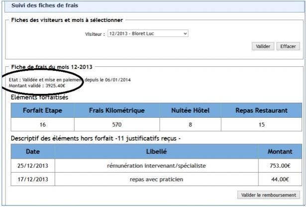
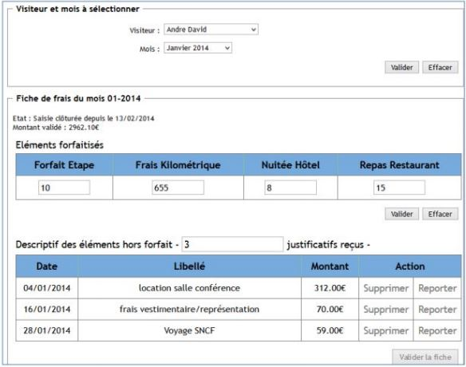
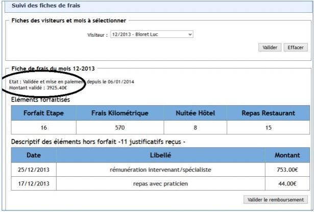
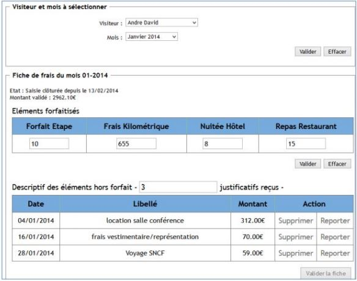

GSB PHP MVC
But du projet
Le laboratoire Galaxy Swiss Bourdin (GSB) engage des visiteurs qui sont amenés à se déplacer. Leurs déplacements et actions de terrain engendrent des frais qui doivent être pris en charge par la comptabilité : ils disposent d’une application pour saisir leurs frais. L’application doit maintenant proposer un menu comptable afin de suivre les frais enregistrés par les visiteurs. (La première étape afin que les comptables accèdent à l'application remboursement des frais est l'authentification. Les utilisateurs ont plusieurs rôle et selon leur rôle il accède à un accueil différent.)


 



Pierre-Feuille-Ciseaux
But du projet
Le projet de cette application est de réaliser le jeu du Pierre Feuille Ciseaux contre un robot en choisissant le nombre de points voulu et calcule le score avec une fonctionnalité de pouvoir recommencer le jeu à 0.